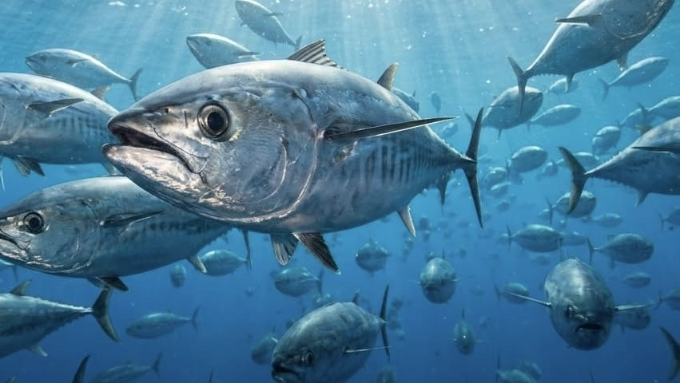
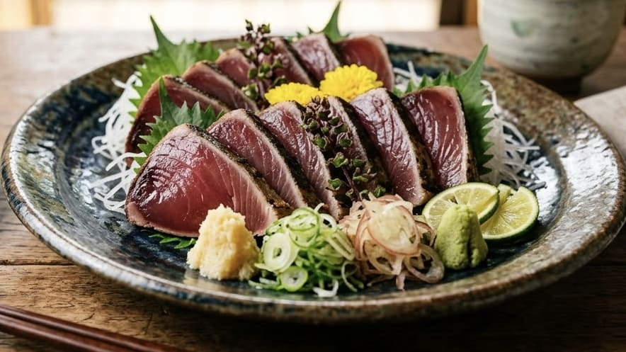

堤防から弾丸ランナーを撃ち落とせ！「カツオ」の生態とショア攻略完全ガイド

江戸時代に「目に青葉 山ほととぎす 初鰹」と詠まれたように、古くから日本人の食文化と密接に関わってきたカツオ。沖合を回遊する魚であり、船で鳥山を探して群れを追いかけるイメージが強いかもしれません。しかし、ベイト（エサとなる小魚）の動向など特定の条件さえピタリと合えば、防波堤やサーフといった陸っぱりからでも十分に狙うことができる、非常にエキサイティングなターゲットです。 今回は、身近な青物であるイナダやサバとは一味違う「弾丸のようなファイト」を見せるカツオについて、その特異な生態からショア（岸）からの釣り方、そして美味しさを保つための持ち帰り方までを徹底解説します。1. カツオの生態：イナダ・ワラサとは全く違う「超・高速回遊魚」
- 一般的にカツオ（本ガツオ）と呼ばれる魚は、スズキ目サバ科に属しています。春になると黒潮などの暖流に乗って日本近海を北上し、秋には産卵のために再び南の海へと下る、非常にスケールの大きな回遊を行います。
- 岸からルアーで狙う青物といえばイナダ（ブリの若魚）が代表的ですが、カツオはファイトの性質が全く異なります。イナダやワラサが針に掛かると海底に向かって下へ突っ込むような重量感のある引きを見せるのに対し、カツオは極めて流線型のボディを活かし、ヒットした瞬間に信じられないスピードで一気に横方向へ走り出します。さらに高速のまま急激に方向転換を繰り返すため、スピード感において他の青物の追随を許しません。
- なお、陸っぱりから「カツオが釣れた」という場合、本ガツオではなく同じサバ科の「マルソウダ」や「ヒラソウダ」といったソウダガツオ類であることも多く、これらも堤防の身近な好ターゲットとして人気を集めています。本ガツオは成長すると腹側に特徴的な縞模様が現れるのが特徴です。
2. 岸から出会うための絶対条件：「ベイト」と「ナブラ」
- カツオは非常に遊泳力が高く常に泳ぎ続けており、その原動力としてイワシやキビナゴなどの小魚を猛烈な勢いで捕食します。そのため、陸っぱりからカツオを釣るには「マズメ時だから」という理由以上に、「カツオのエサとなる小魚が岸近くに寄り付いているか」が最大のキーポイントになります。
- 狙い目となるのは、外洋に面した潮通しの良い堤防の先端や、岬、湾口部などです。海鳥が上空に集まって水面に突っ込む「鳥山」や、逃げ惑う小魚によって海面が沸き立つ「ナブラ」が発生していれば大チャンス到来です。
- 闇雲にルアーを投げるのではなく、「カツオのエサが集まる条件」を読むことが釣果への近道となります。
3. 陸っぱり攻略の二大巨頭：ショアジギングと弓角
カツオの群れが射程圏内に入った場合、主力となるのは機動力のある「ショアジギング」と「弓角（ゆみづの）」です。
- ショアジギングでの「超高速リトリーブ」：20〜40g前後のメタルジグを使用します。カツオはとてつもなく泳ぐのが速いため、「こんなに速くリールを巻いて魚が追いつけるのか？」と不安になるほどの超高速巻き（リトリーブ）が非常に有効です。ゆっくりルアーを見せるよりも、必死に逃げる小魚を演出して本能を刺激しましょう。
- マイクロベイトに強い「弓角」：エサのサイズが小さくてルアーに見向きもしない時は、日本古来の疑似餌である弓角の出番です。ジェット天秤などを使って遠くまで飛ばし、一定の速度でひたすら巻き続けることで、ルアーにはない独特の回転アクションでカツオを狂わせます。
- ナブラ撃ちの鉄則：ナブラを見つけるとついその中心にルアーを投げ込みたくなりますが、それは群れを散らしてしまうNG行動です。魚が向かっている進行方向の少し先へ着水させ、群れと同じ方向へ逃げるようにルアーを引いてくるのが見切られないコツです。
4. スリリングなファイトと、確実な取り込み
- 9〜10フィート前後のショアジギングロッドに、4000〜5000番のハイギアリール、PEライン1.5〜2号という、ライトショアジギングより少し強めのタックル設定が安心です。
- カツオは掛かった直後に猛スピードで走るため、リールのドラグはガチガチに締めすぎず、走る時は走らせる余裕を持たせてラインブレイクを防ぎましょう。また、足元まで寄せた後でも突然走り出すことがあるため、最後まで油断は禁物です。
- 無理に抜き上げようとすると身切れでバラしてしまう危険があるため、大型の場合は必ずタモ網（ランディングネット）を使用して確実に取り込みます。
5. 釣った後の処理が命！究極の鮮度管理と味わい方

- カツオ釣りにおいて、魚を釣り上げるのと同じくらい重要なのが「釣った後の処置」です。カツオは激しく暴れると筋肉中のエネルギーが消費され、さらに体温が上がりやすいため、そのまま堤防に放置すると一気に身の質が低下してしまいます。
- 記念撮影は後回しにし、釣り上げたらすぐに脳天を締めて血抜きを行い、氷と海水で作った「潮氷」に浸けて一気に深部まで急冷するのが美味しく持ち帰る絶対条件です。十分に冷えた後は、真水に長時間触れないように袋などに入れてクーラーボックスで保管しましょう。
- 秋に南下してくる「戻りガツオ」は、たっぷりとエサを食べて強烈に脂が乗っており、釣り人ならずとも垂涎の的です。春のさっぱりとした初ガツオとはまた違う濃厚な旨味があります。
- 鮮度抜群の身を刺身でいただくのはもちろん、表面を強火でサッと炙り、香ばしさと内側のレアな食感を楽しむ「たたき」はまさに絶品です。鮮度管理がしっかりできていれば、血合いの部分も竜田揚げや生姜煮などで余すところなく美味しく楽しめます。
6. カツオの縞には、ちょっとした秘密がある
- カツオを釣り上げたら、ぜひ腹側の模様にも注目してみてください。カツオといえば黒い縦縞がおなじみですが、実はこの模様はいつでも同じように見えているわけではありません。生きて泳いでいるときには目立たなかった縞が、興奮したときには横方向に現れ、釣り上げられて状態が変わると、今度は腹側に特徴的な縦縞が浮かび上がります。まるで体の状態を模様で知らせているようにも見える、カツオならではの不思議な特徴です。
- しかも、この縞模様は昔から日本人の目を引いてきました。カツオの縦縞を表した「鰹縞（かつおじま）」という柄まで生まれ、着物などにも取り入れられています。高速で海を駆け抜けるカツオの姿が、魚そのものだけでなく、日本の模様としても残っているわけです。
- そんなカツオの体をよく見ると、背びれの後ろには小さなヒレがいくつも並んでいます。これは「小離鰭（しょうりき）」と呼ばれるもので、マグロ類にも見られる特徴。カツオはサバ科の魚でありながら、分類上はマグロに近い仲間でもあり、その流線型の体と小離鰭を使って高速で泳ぎ続けます。
- つまり、カツオの縞模様は単なる「魚の柄」ではありません。海を高速で駆けるために進化した独特の体を持ち、その姿が古くから日本人に親しまれ、ついには「鰹縞」という文化にまでなった魚なのです。釣ったカツオを眺めるとき、そんな背景まで知っていると、いつもの縞模様が少し違って見えてくるかもしれません。
📍 関東の生息・釣果スポット
※マップ上の赤いドットが釣れるポイントです。